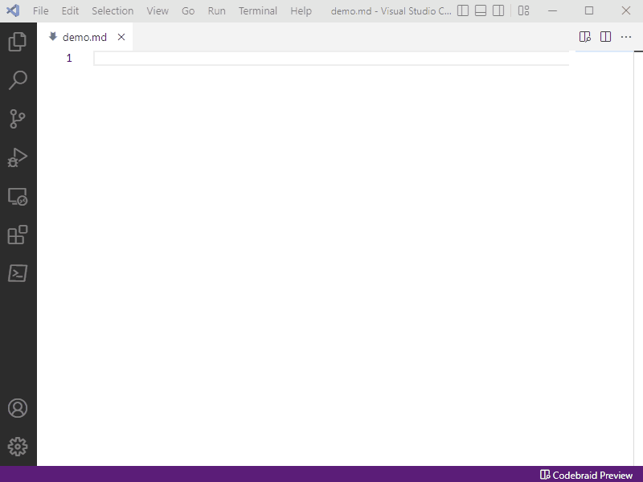
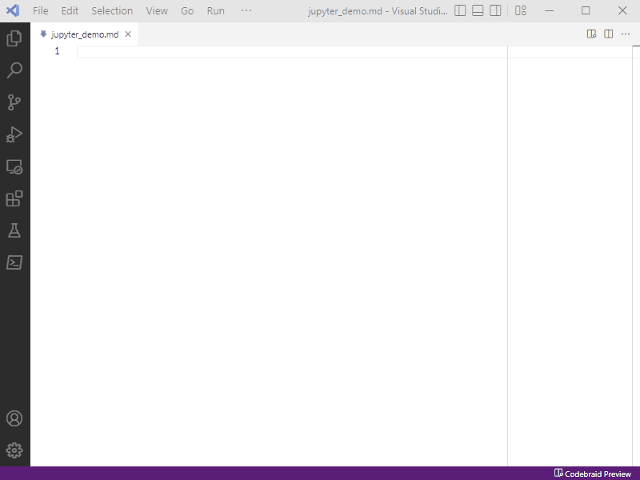

Codebraid Preview
Preview Markdown documents in VS Code or VSCodium with full support for all Pandoc extensions to Markdown syntax. Jump between Markdown source and the preview with full bidirectional scroll sync. Execute code blocks and inline code via Codebraid using Jupyter kernels or Codebraid’s built-in execution system. Export to PDF, Microsoft Word, and other formats with Pandoc.
Pandoc demo
The animation below demonstrates Markdown features. All Pandoc extensions to Markdown syntax are fully supported, because the preview is generated with Pandoc itself! This includes features like math, definition lists, tables, strikethrough, subscripts, superscripts, and footnotes. Full bidirectional scroll sync is provided for all Markdown variants based on CommonMark.

Code execution demo
Optional code execution is provided by
Codebraid. The animation below shows a
code block being executed in notebook mode using a Jupyter kernel. Executing
a code block is simply a matter of adding a Codebraid attribute to the code
block and then running Codebraid. In this case, the code block has the Pandoc
attributes {.python .cb-nb}. .python specifies the language, and .cb-nb
specifies code execution using Codebraid’s notebook (nb) mode. The YAML
metadata at the beginning of the document sets jupyter: true to specify that
Jupyter kernels are used for code execution instead of Codebraid’s built-in
execution system.

More information
For installation information and details about features, explore the menu or follow the “Next” button at the bottom of the page.
External links
- Paper in SciPy 2022 proceedings
- Pandoc website and GitHub
- Codebraid Preview on the Visual Studio Marketplace, Open VSX Registry, and GitHub
- Codebraid on PyPI, conda-forge, and GitHub